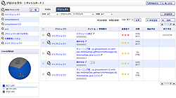
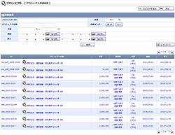
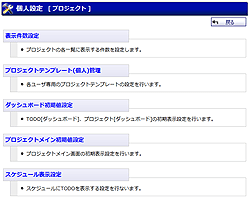
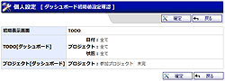
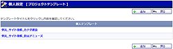

ダッシュボード（TODO）
ダッシュボード（プロジェクト）
プロジェクト登録
プロジェクト編集
プロジェクト登録確認
プロジェクト編集確認
状態設定
TODOラベル設定
TODO状態設定
TODOラベル削除
TODOD状態削除
プロジェクトメイン
プロジェクト詳細検索
TODO登録
TODO編集
TODO登録確認
TODO編集確認
TODO参照
TODO詳細検索
個人設定メニュー
表示件数設定
ダッシュボード初期値設定
ダッシュボード初期値設定確認
プロジェクトメイン初期値設定
プロジェクトメイン初期値設定確認
スケジュール表示設定
管理者設定メニュー
登録権限設定
登録権限設定確認
個人プロジェクトテンプレート
共有プロジェクトテンプレート
テンプレート選択
プロジェクトテンプレート登録(個人)
プロジェクトテンプレート編集（個人）
プロジェクトテンプレート登録(共有)
プロジェクトテンプレート編集(共有)
プロジェクトテンプレート登録確認（個人）
プロジェクトテンプレート編集確認（個人）
プロジェクトテンプレート登録確認（共有）
プロジェクトテンプレート編集確認（共有）
プロジェクトテンプレート選択
プロジェクトメンバー内部設定
プロジェクトメンバー外部設定
TODOインポート
TODOインポート確認